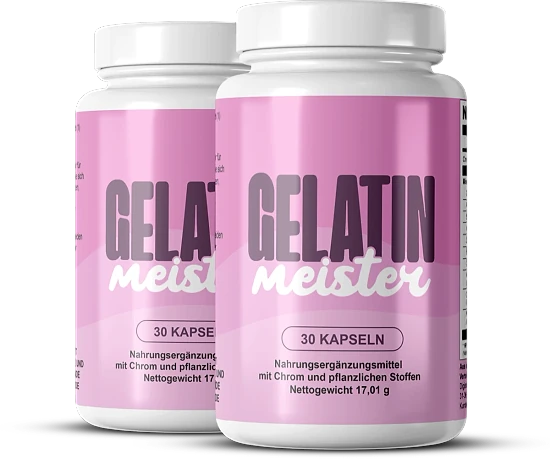

Was ist Gelatin Meister und wie wirkt es?
Gelatin Meister wird in Kapselform angeboten und als natürliche Mischung für die Figur präsentiert. Die Marke hat es für Gewichtsmanagement, Appetit und Stoffwechsel im Rahmen eines aktiven Lebens entwickelt. Vor allem Erwachsene, die eine praktische Unterstützung neben einer bewussten Ernährung wollen, sind gemeint. Die Kapsel wird als Unterstützung innerhalb eines größeren Ansatzes beschrieben, nicht als isoliertes Mittel. Eine Flasche ist so bemessen, dass sie genau einen Monat lang für die tägliche Einnahme reicht.
Es handelt sich nicht um Gelatine zum Auflösen: Die Flasche beschreibt ein Präparat mit Chrom und pflanzlichen Stoffen. In jeder Flasche befinden sich 30 Kapseln, also ein Monat Einnahme. Zusammensetzung, Verzehrempfehlung und Warnhinweise sind auf Deutsch auf der Flasche abgedruckt.
Die Zusammensetzung umfasst elf Wirkstoffe, wie Apfelessig, Zimt, Bitterorange und Resveratrol. Jeder Bestandteil sei laut Hersteller sorgfältig ausgewählt und dosiert. Nach Herstellerangaben kommt die Rezeptur ohne künstliche Zusatzstoffe aus und eignet sich für längere Zeit. Die Kapseln mit pflanzlicher Hülle werden ohne Vorbereitung geschluckt, was die tägliche Routine erleichtert.
Beim Wirkprinzip trägt Chrom zu einem normalen Stoffwechsel der Makronährstoffe bei, erinnert die Marke. Auf der einen Seite Grüntee, Cayenne und Bitterorange für den Stoffwechsel, auf der anderen Ingwer und Zimt für die Verdauung.
Der Hersteller nennt weniger Heißhunger nach zwei bis drei Wochen und empfiehlt mindestens drei Monate. Kurzfristige Veränderungen stehen nicht im Vordergrund. Sie ist auf eine längere Begleitung ausgelegt, nicht auf kurzfristige Effekte.
In den USA hergestellt, wird es in Europa von Digistore24 MSLW Limited vertrieben, so das Etikett. Der Nettoinhalt beträgt 17,01 g laut Flasche.
Gelatin Meister ist nicht dafür gedacht, Krankheiten zu diagnostizieren, zu behandeln, zu heilen oder ihnen vorzubeugen. Eine vielfältige Ernährung bleibt unverzichtbar, und die Wirkung variiert von Mensch zu Mensch.
Gelatin Meister Inhaltsstoffe
Die Zusammensetzung pro Kapsel sieht laut Flasche so aus:
Chrom mit 100 µg: unterstützt den Stoffwechsel von Kohlenhydraten, Fetten und Eiweiß.
Grüntee mit 154 mg: ein für seine Catechine bekannter Blattextrakt.
Apfelessig mit 150 mg: ein Klassiker in Formeln rund um die Verdauung.
Berberin mit 85 mg: ein Pflanzenstoff, der in mehreren Pflanzen vorkommt.
Zimtkassie (20 mg) und Ingwer (50 mg): für die Verdauung genutzt.
Ergänzende Extrakte: Bitterorange, Cayenne, Königinblume, Koreanischer Ginseng und Resveratrol, jeweils auf dem Etikett dosiert.
Laut Etikett kommt das Resveratrol aus Staudenknöterich, die Bitterorange ist für ihr Synephrin bekannt. Als Hilfsstoffe dienen nur die pflanzliche Kapsel, Cellulose und Rieselhilfsmittel.
Dank der Angaben pro Kapsel kann man die Formel gut mit anderen Präparaten vergleichen. Lediglich Chrom ist mit einem NRV-Prozentsatz versehen, als einziger bezifferter Nährstoff. Aktive Extrakte wie Grüntee und Bitterorange machen eine sorgfältige Lektüre der Hinweise nötig. Die Zutatenliste ist vollständig, was bei Allergien die Prüfung erleichtert. Die größten Mengen entfallen auf Grüntee und Apfelessig, mit 154 und 150 mg. Mehrere Pflanzen sind nur in geringen Mengen enthalten, etwa mit 1 bis 5 mg pro Kapsel. Insgesamt ist die Zusammensetzung damit transparent.
Gelatin Meister Nebenwirkungen
Gelatin Meister gilt laut Marke als in den meisten Fällen gut verträglich. Laut FAQ sind Effekte selten und beschränken sich oft auf leichte Verdauungsbeschwerden.
Empfindliche Personen sollten wissen, dass Grüntee, Bitterorange und Pfeffer enthalten sind. Das Etikett beschränkt es auf Erwachsene, schließt Schwangerschaft und Stillzeit aus und legt eine Höchstdosis fest. Zu Beginn der Kur sollte die empfohlene Dosis eingehalten werden, um die Verträglichkeit zu prüfen.
Ein besonderer Hinweis betrifft Diabetes und Unterzuckerung: Ärztlicher Rat ist nötig. Bei Bluthochdruck oder Blutverdünnern ist ärztlicher Rat gefragt, mit zwei Stunden Abstand. Die Behörden haben die Angaben der Marke nicht bewertet, so die Website. Diese Warnungen sind bei Kombinationen aus Mineralstoffen und aktiven Extrakten häufig.
Der Verschluss muss vor der Nutzung unversehrt sein. Wenn Beschwerden auftreten, ist es klug, abzusetzen und sich beraten zu lassen. Die Empfindlichkeit ist individuell, und ärztlicher Rat schafft Klarheit. Ob Überschneidungen mit anderen Präparaten bestehen, kann ein Apotheker gut beurteilen. Am einfachsten bringt man die Flasche zum Arzt mit, damit er die Zutatenliste ansehen kann. Wenn Beschwerden bleiben, sollte man die Kur unterbrechen und ärztlich klären lassen, warum. Gerade in den ersten Tagen ist es sinnvoll, die eigene Verträglichkeit sorgfältig zu beobachten.
Gelatin Meister Dosierung
Erwachsene nehmen eine Kapsel pro Tag, wie auf der Flasche angegeben. Idealerweise nimmt man die Kapsel vor einer Hauptmahlzeit mit Wasser.
Jede Flasche mit 30 Kapseln steht für einen Monat. Trotz einer Seite mit zwei Kapseln empfiehlt das Etikett eine Kapsel pro Tag, und das gilt. Die Kapsel muss nicht geöffnet werden.
Der Hersteller unterstreicht die Beständigkeit: Erste Effekte sollen nach zwei bis drei Wochen kommen. Die Website nennt klarere Ergebnisse zwischen der vierten und sechsten Woche und rät zu mindestens 90 Tagen. Die empfohlene Dauer entspricht drei Flaschen. Mehr Kapseln bringen nicht schneller Ergebnisse, die Regelmäßigkeit ist entscheidend.
Die Website schlägt vor, die Kapsel mit gesunder Ernährung und Sport zu kombinieren. Wie die Flasche festhält, ist ein Präparat kein Ersatz für eine vielfältige Ernährung.
Bewahren Sie Gelatin Meister trocken unter 30 °C und außer Reichweite von Kindern auf. Wer die Kapsel jeden Tag zur gleichen Zeit nimmt, bleibt leichter dabei. Das Startdatum festzuhalten, macht die Planung der weiteren Flaschen einfacher. Vor einer festen Hauptmahlzeit lässt sich die Kapsel leicht in den Tag einbauen. Eine tägliche Gewohnheit sorgt dafür, dass die Kur ohne Lücken über die ganze empfohlene Dauer läuft. Wer eine Kapsel vergisst, nimmt am nächsten Tag ganz normal eine.
Gelatin Meister – Rückerstattung
Eine 60-Tage-Geld-zurück-Garantie begleitet Gelatin Meister. Wer nicht überzeugt ist, kann den Kaufbetrag vollständig zurückbekommen.
Einzuhaltende Frist: 60 Tage, und die Rücksendung aller Flaschen ist Pflicht. Achtung: Die Frist läuft ab dem Kauf, nicht ab dem Erhalt.
Schritt eins: Der Kundenservice (support@centralmeister.com) braucht Ihre Bestellnummer und den Grund. Vergessen Sie nicht Namen, Adresse und Kontaktdaten in der Nachricht.
Schritt zwei: das Paket an Gelatin Meister Returns in den Niederlanden senden und die Verfolgung notieren. Ohne Sendungsnummer kann der Antrag auf Erstattung nicht abgeschlossen werden. Die Bestätigungs-E-Mail beweist das Bestelldatum und vereinfacht den Ablauf. Der Kunde trägt die Kosten des Rückversands, heißt es in den Bedingungen.
Schritt drei: Die Marke prüft das eingegangene Paket und bestätigt die Entscheidung per E-Mail. Nach Genehmigung kommt der Betrag in 5 bis 10 Werktagen zurück. Die Erstattung nutzt das ursprüngliche Zahlungsmittel; der Kundenservice erklärt jeden Schritt.
Der Support ist laut Etikett unter derselben Adresse erreichbar, und die Bedingungen stehen zum Nachlesen auf der Website. Trotz Garantie ist es klug, sich vor der Bestellung gründlich mit dem Produkt und den Bedingungen zu befassen. Je genauer die Schritte befolgt werden, desto schneller läuft die Erstattung. Der Support erklärt jeden Schritt bei Bedarf ausführlich per E-Mail. Mit diesen Dokumenten geht die Bearbeitung beim Kundenservice deutlich zügiger.
Gelatin Meister – Wo kaufen?
Die Bestellung von Gelatin Meister erfolgt auf der offiziellen Website, und Digistore24 übernimmt die Zahlung. Das Produkt ist laut Marke nicht bei Amazon, im Laden oder in der Apotheke zu finden. Man kann das ganze Etikett auf der offiziellen Website lesen, bevor man bestellt.
Bei einem unbekannten Händler lässt sich weder die Herkunft noch die Lagerung prüfen. Hier entsteht ein echtes Risiko für Qualität und Sicherheit, ganz abgesehen von der Garantie. Wenige Sekunden Prüfung reichen oft, um eine Fälschung zu vermeiden.
Käufer bevorzugen die offizielle Quelle, die das Originalprodukt und die volle Garantie garantiert. Die Bestellseite spricht von einer Einmalzahlung, der Kundenservice von support@centralmeister.com hilft weiter. Die offizielle Bestellung sichert ein Produkt, das dem veröffentlichten Etikett entspricht. Der Support der Marke betreut in erster Linie Käufer der offiziellen Website. Bevor man bezahlt, sollte man die Adresse in der Browserzeile kurz prüfen. Die Entscheidung für die offizielle Website ist der einfachste Schutz vor Fälschungen und unklarer Herkunft.
Nehmen Sie sich vor dem Bezahlen kurz Zeit, die Adresse der offiziellen Gelatin Meister-Website zu prüfen.
Um sicherzugehen, dass Sie das Originalprodukt erhalten, besuchen die meisten Nutzer die offizielle Website.
Ist Gelatin Meister Betrug?
Beim Lesen von Website und Flasche wirkt Gelatin Meister nicht wie ein Betrug. Gelatin Meister wird über Digistore24, eine seriöse Plattform, angeboten und ist für das Gewichtsmanagement gedacht.
Die Nährwerttabelle nennt die genaue Dosis der elf Wirkstoffe. Die zitierte Funktion des Chroms ist eine zugelassene Aussage.
Das Etikett nennt Digistore24 MSLW Limited, die Website eine Rücksendeadresse in Moordrecht. Diese Punkte versprechen nichts, zeigen aber identifizierbare Firmen hinter dem Verkauf.
Vor dem Timer und den Bestandshinweisen der Bestellseite sollte man einen kühlen Kopf bewahren. Die Versprechen zur „Fettverbrennung“ und die Studien ohne Quelle sollten kritisch betrachtet werden. Halten Sie Ihre Erwartungen vernünftig und orientieren Sie sich am Etikett. Ein Präparat ergänzt eine gesunde Lebensweise, ersetzt sie aber nie. So kann man die Einnahme mit gutem Gewissen und gut informiert beginnen.
Die 60-Tage-Geld-zurück-Garantie wird von einem klaren Ablauf begleitet. Wer sich eine Meinung bilden will, sollte die empfohlene Kurdauer abwarten. Wer unsicher ist oder Medikamente nimmt, spricht vorher mit seinem Arzt. Alles in allem wirkt das Angebot seriös, auch wenn die Verkaufsseite mit großen Versprechen arbeitet. Jeder reagiert anders, und der Arzt bleibt bei Problemen die Referenz.
Erwachsene, die ihre Bemühungen beim Gewicht begleiten möchten, können Gelatin Meister erwägen, idealerweise über die offizielle Website.
Wer Produktdetails überprüfen oder die aktuelle Verfügbarkeit prüfen möchte, ist auf der offiziellen Gelatin Meister-Website am sichersten aufgehoben.
